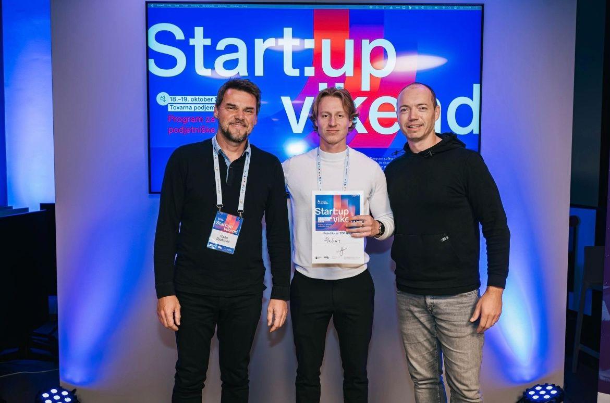

"CV"
Moja pot do sem.
Sem Anže Skralovnik. Iščem sodelovanje, kjer lahko povežem ustvarjalnost z AI, samostojno delo in prispevam k napredku vašega podjetja. Ukvarjam se z ustvarjanjem vsebin, oblikovanjem v Canvi in raziskovanjem praktične uporabe AI. Izkušnje imam s soustanavljanjem spletne platforme, objavami za družbena omrežja, SEO, prenovo spletne strani in e-poštnimi kampanjami v Brevu. Zanima me, kako dobro idejo spremeniti v nekaj, kar ljudje razumejo in lahko uporabljajo.
Moja osnova je računalništvo. Med letoma 2017 in 2021 sem se v Ravnah na Koroškem izobraževal za računalniškega tehnika ter se učil programiranja in izdelave spletnih strani. Prve delovne izkušnje sem dobil že med šolanjem: od januarja do aprila 2019 sem pri STROKA.si spoznaval pregledovanje internetnih povezav in informacijskih sistemov. Poleti istega leta sem pri STROJ d.o.o. opravljal administrativno delo, urejal projektne podatke in delal v proizvodnji. Tako sem spoznal tudi delo, pri katerem sta pomembna natančnost in sodelovanje z drugimi.
Na Ekonomsko-poslovni fakulteti v Mariboru sem nato študiral podjetništvo. Tam sem spoznal inovacije, marketing in prodajo ter se učil, kako voditi podjetje s teoretično podprtim strateškim managementom. Pri diplomski nalogi sem raziskoval uporabo psihologije pri predstavitvi platforme Glasbena želja — kako idejo predstaviti z besedami, nastopom in vizualno podobo. Sodeloval sem na štirih hackathonih in na enem zmagal. Na njih smo iskali rešitve za konkretne izzive podjetij. Ena od teh rešitev je bil Mind Agent™ – interni AI asistent, ki deluje kot pametni sodelavec za zaposlene. Poveš, kaj rabiš, in v nekaj sekundah dobiš želeno informacijo iz internih dokumentov.

Danes obiskujem 2. letnik magistrskega študija, smer Strateški in projektni management.
Pomemben del mojih izkušenj je Glasbena želja. Leta 2023 smo z dvema kolegoma ustanovili podjetje INVERZ in soustvarili platformo, ki ljudem pomaga najti glasbenika za njihov dogodek. Skrbel sem za marketing, objave na družbenih omrežjih, Facebook oglase, SEO, klice ter komunikacijo in podporo strankam. Ob mentorstvu v MPIK Inkubatorju Koroška sem se učil marketinških strategij, Google kampanj in razvoja podjetja. Platforma je dosegla 100+ glasbenikov in 6.500 mesečnih uporabnikov; to je rezultat dela naše ekipe.
Pri Infinite Biotech sem v okviru študentskega dela obnovil spletno stran, pripravljal objave na LinkedInu ter pošiljal e-poštne kampanje in delal z mailing listami v Brevu. To mi je dalo izkušnje z različnimi deli digitalne prisotnosti podjetja: s spletno stranjo, družbenimi omrežji in neposredno komunikacijo prek e-pošte.
Ob tem razvijam svoj Osebni BrandInstagram profil. Vsebine pišem sam in jih ročno oblikujem v Canvi. Pri pisanju razmišljam o uvodu (hook), ki pritegne pozornost, utemeljitvi sporočila, vrednosti za bralca in pozivu k dejanju. AI mi pomaga besedilo urediti, vizualno zasnovo pa oblikujem sam. Tako sem razvil svoj prepoznaven slog, ki ga zdaj prenašam tudi v video in motion design.
Pri vsakdanjem delu uporabljam ChatGPT, Claude, DeepSeek, JEV, Higgsfield, n8n ter orodja za ustvarjanje slik in videov. Zanima me tudi, kako lahko AI pomaga pri organizaciji in avtomatizaciji dela. Zato razvijam Personal AI OS™: osebno delovno okolje, ki povezuje osebne dnevne zapise idej, projektne mape, sproti dopolnjen kontekst. Folder System™ določa mesto projektov, Dynamic Context System™ ohranja pomembne informacije, Capture System™ pa pomaga zbrati ideje za nadaljnje delo. V okviru te smeri razvijam tudi Atheno™, AI agenta, ki ga želim predstaviti kot produkt. Projekt je še v razvoju.
Primer ene od mojih osebnih avtomatizacij je AI agent Next day sorter™. Vsak dan si shranim več kot deset idej ali pomembnejših zapisov. Nekateri so namenjeni razvoju projektov, druge pa želim bolje razumeti in si jih zapomniti. Agent ideje razvrsti glede na projekt, na katerega se nanašajo, in jih shrani na ustrezno mesto. Zapise, ki jih želim utrditi v spominu, mi naslednji dan pošlje v SMS-sporočilu, da jih še enkrat preberem. Tako ideje dobijo svoje mesto, pomembne misli pa priložnost, da si jih bolje zapomnim.
Poleg študija sem se učil tudi ob mentorstvu Mateja Rusa in Urbana Lapajneta iz Tovarne podjemov ter Nika Klanška v programu VTIS. V prostem času se ukvarjam s tekom in fitnesom. Pri delu pa mi je blizu kombinacija samostojnosti, jasnega dogovora in odgovornosti za končni izdelek.
Anže Skralovnik